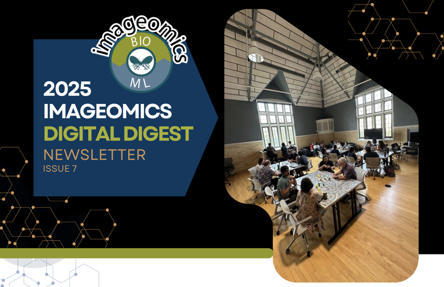

Imageomics Institute's Digital Digest, Issue 7, is out and packed with updates on our mission to advance #AIforNature and #AIforGood:
NSF FAIROS Award – Imageomics researchers receive a new grant to accelerate open, AI-ready biodiversity data.
Welcome Dr. Brittany Fonner – Our new Research Programs and Communications Specialist joins the team.
Student Spotlight: Luke Meyers – A graduate researcher shares his work on pollinator ecology, complete with a new YouTube video.
FuncaPalooza 2025 Recap – A look back at this summer’s collaborative workshop and its exciting outcomes.
Faculty Highlight: Arnab Nandi – Celebrating Dr. Nandi’s promotion to Full Professor at The Ohio State University.
IT Updates – Behind-the-scenes infrastructure powering Imageomics research.
NSF HDR Community Conference 2025 – Get ready for the upcoming HDR Conference, hosted at Ohio State this September.
Read the full issue by clicking the photo above.